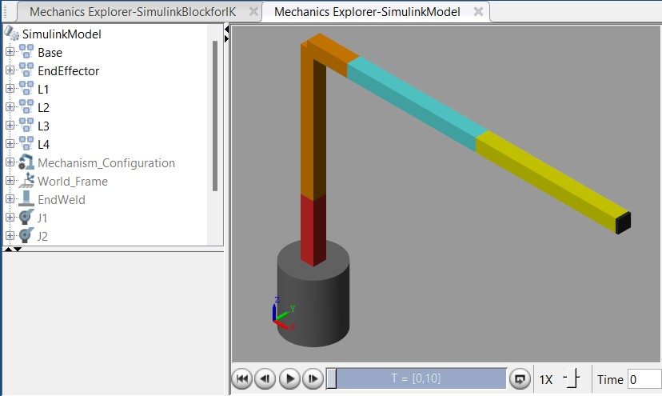

Manipulator path planning with MPPI.
Testing a sampling-based trajectory optimizer on a four-degree-of-freedom robot arm.

04 / 06- Institution
- IIT Madras
- Timeline
- July – November 2024
- Robot
- PincherX100 · 4-DOF model
- Tools
- SIMULINK · Simscape · Robotics System Toolbox
Overview
This undergraduate research project studied whether Model Predictive Path Integral (MPPI) control could generate useful paths for a four-degree-of-freedom manipulator. I built a PincherX100 model in SIMULINK and used its inverse-kinematics solver to establish a nominal trajectory.
MPPI then sampled perturbed control inputs, simulated candidate trajectories, and weighted them according to a cost that considered joint velocities, accelerations, joint-state error, and final end-effector position.
Sampling possible motions
- Defined the robot's four links and joints and modeled its inverse-kinematics loop in SIMULINK.
- Applied Gaussian perturbations to nominal control inputs to generate candidate trajectories.
- Scored trajectories against motion smoothness and the intended final pose before updating the nominal path.
A useful limitation to uncover
In this setup, most sampled paths cost more than the nominal path, so the algorithm often retained that trajectory. The weighted controls did not converge reliably to the goal unless the number of time steps increased substantially, which made execution cumbersome.
The report identifies end-effector convergence and the chosen cost weights as areas for further tuning and testing. This result clarified the practical difficulty of applying the sampling method to a higher-degree-of-freedom arm.
Case study visuals
Placeholder: add the inverse-kinematics model, sample trajectories, cost comparisons, and an animation of the robot arm.